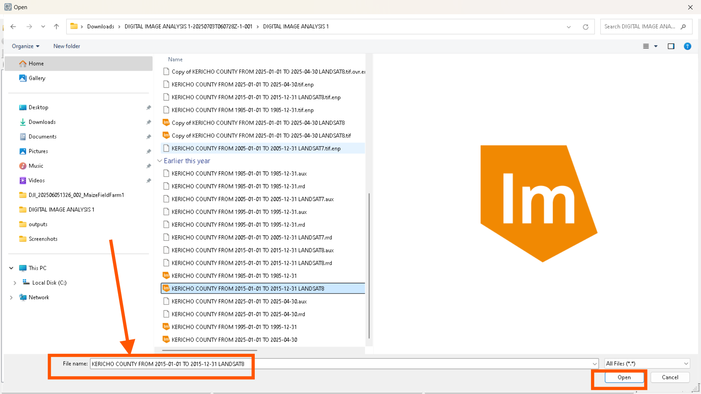

Advanced Geospatial Analysis: Unsupervised Classification Workflow
A comprehensive guide detailing the process of performing unsupervised Land Use/Land Cover (LULC) classification using ENVI software, and subsequently refining and visualizing the results within ArcMap. This methodology is crucial for dynamic environmental monitoring and land management studies in regions like Kericho, Kenya.
Part 1: Unsupervised Classification in ENVI
This section outlines the initial phase of image processing, focusing on how raw satellite imagery is transformed into thematic land cover maps using ENVI's robust unsupervised classification algorithms.
Step 1: Initiating ENVI Software
Begin by launching the ENVI software on your computing device. For optimal compatibility and to facilitate seamless integration with ArcMap for subsequent cartographic refinements, it is highly recommended to use the 32-bit version of ENVI 5.3. This specific version provides critical export functionalities that streamline the workflow between the two platforms.
Figure 1: Locating and launching the ENVI 5.3 (32-bit) application through the system search interface.
Step 2: Importing Satellite Imagery into ENVI
Upon successful launch, the ENVI graphical user interface will appear. To load your satellite imagery for analysis, navigate to the menu bar and select File > Open. This action will prompt a file browser, allowing you to locate and select your desired image file. ENVI supports a variety of common raster formats, including .TIF, .IMG, and .OVR files.

Figure 2: The ENVI main interface, illustrating the "File" menu and the "Open" option selected to import data.
Figure 3: A file explorer window demonstrating the selection of a Landsat 8 image for Kericho County (e.g., "KERICHO COUNTY FROM 2015-01-01 TO 2015-12-31 LANDSAT8").
Step 3: Accessing the Classification Workflow
Once the image is successfully loaded, it will be rendered within the ENVI viewport. For instance, the Kericho Landsat 8 image from 2015 is now ready for processing. To initiate the unsupervised classification process, direct your attention to the ENVI Toolbox, typically situated in the upper-right section of the interface. Expand the Classification category, and then select Classification Workflow to proceed.

Figure 4: The ENVI environment showing the loaded image and the highlighted path to the "Classification Workflow" within the Toolbox.
Step 4: Defining Input and Classification Method
The "File Selection" dialogue will appear, where you must confirm that the correct input raster file is chosen for classification. Subsequently, you will be presented with the "Classification Type" window. A key characteristic of unsupervised classification is its independence from predefined training samples; the algorithm autonomously groups pixels based on their spectral properties. Therefore, select the "No Training Data" option and proceed to the next step.

Figure 5: Specifying the input file and selecting "No Training Data" for unsupervised classification.
Step 5: Specifying Number of Classes with ISODATA Parameters
In the "Unsupervised Classification ISODATA Parameters" window, you are required to define the desired number of thematic classes (or clusters) that the ISODATA algorithm will attempt to identify within the imagery. In this specific case, seven classes were assigned. This choice accounts for the possibility that two of these initial clusters might represent "Unclassified" or "No-data" regions, leaving a more manageable number of meaningful land cover categories for subsequent analysis.
Figure 6: The "ISODATA Parameters" window, showing the input field for "Number of Classes" set to 7.
Step 6: Refining Classification Results (Cleanup)
Once the unsupervised classification process concludes, the image with its extracted thematic classes will be displayed. To enhance the visual quality and spatial coherence of the classification, the "Cleanup" window provides options for refinement. This includes enabling "Enable Smoothing" and "Enable Aggregation". For smoothing, a filter matrix such as a $7 \times 7$ kernel was applied, which helps in reducing salt-and-pepper noise and producing more generalized land cover patches.

Figure 7: The "Cleanup" interface, illustrating the options for refining the classification output, including smoothing and aggregation parameters.
Step 7: Exporting Classification Outputs
After the refinement process, the "cleaned" image can be exported for further manipulation and cartographic production in other geospatial software, notably ArcMap. Select the "Export Classification Image" option and specify your preferred output format (e.g., ENVI) and the desired filename and directory. Additionally, the classified features can be exported as "Classification Vectors" (e.g., in Shapefile format), which provides vector data suitable for detailed GIS analysis.

Figure 8: The "Export Save Results" window, showing options for exporting both raster classification images and vector features.

Figure 9: A progress bar indicating the ongoing export of the classification results to the specified output folder.
Part 2: Refinement and Cartographic Enhancements in ArcMap
This section details the critical steps taken in ArcMap to transform the raw classified output into a polished, cartographically sound LULC map, including reclassification and symbology adjustments.
Step 1: Importing Classified Image into ArcMap
With the classification results successfully exported from ENVI, the subsequent step involves adding this classified image to the ArcMap viewport. This is achieved by using the "Add Data" tool within ArcMap and navigating to the location where your exported `.dat` (or other raster format) file is saved.
Figure A1: The ArcMap interface, demonstrating the process of adding the exported classified image (e.g., `demo.dat`) to the map document.
Step 2: Initial Observation of Unclassified Regions
Upon adding the image to ArcMap, you will likely observe that certain areas are initially designated as "Unclassified". These unclassified pixels typically represent areas that the unsupervised algorithm could not confidently assign to a distinct spectral class, or they might be background noise. Identifying these areas is crucial for the subsequent reclassification process.

Figure A2: The classified image as it first appears in ArcMap, highlighting the presence of initial unclassified regions.
Step 3: Relating Thematic Classes and Symbology Adjustments
To establish meaningful land cover categories, access the image's properties in ArcMap, specifically the Symbology tab. Here, you can visually correlate the spectrally derived unsupervised classes with the true color composite of the original raw Landsat 8 image. This comparative analysis allows for the assignment of appropriate real-world land cover labels to the classified clusters. A practical first step is to render the "Unclassified" categories with "no color" to clearly delineate the actual classified areas for visual assessment.
Figure A3: ArcMap Layer Properties window, illustrating how symbology can be adjusted in relation to the original true color composite image for accurate class identification.
Figure A4: The classified image in ArcMap after applying a "no color" symbology to the unclassified pixels, improving the clarity of the defined land cover types.
Step 4: Final Classification and Cartographic Naming
Based on the visual interpretation and correlation with the reference imagery, the initial unsupervised classes are refined into definitive Land Use/Land Cover categories. For this study, five distinct LULC classes were identified and assigned specific colors for cartographic representation.
The final mapping scheme for the LULC categories is presented below:
| Color Legend | LULC Category |
|---|---|
| Medium Apple | Vegetation |
| Peacock Green | Forest |
| Cantaloupe | Bare |
| Fire Red | Built-up |
| Lemon Grass | Other Agri-land |
Figure A5: The finalized LULC map in ArcMap, showing the distinct five classified categories after refinement and renaming.
Conclusion & Application
This meticulously documented workflow provides a robust framework for performing unsupervised classification using ENVI and subsequent cartographic refinement in ArcMap. This comprehensive process, from initial image acquisition and classification in ENVI to the nuanced reclassification and symbology adjustments in ArcMap, was systematically applied to satellite imagery of Kericho, Kenya, spanning the years 1985, 1995, 2005, 2015, and 2025. The resulting Land Use/Land Cover maps serve as invaluable tools for monitoring environmental changes, urban expansion, and agricultural dynamics over time within the region.